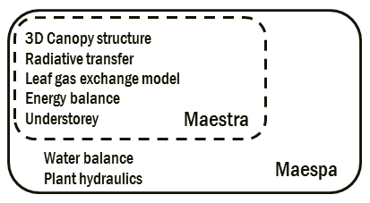

The Maespa model
About
Maespa is a model of forest canopy radiation absorption, photosynthesis and water balance. The model has a long history, going back to the work of John Norman and Paul Jarvis in the 1970's and 80's. Ying -Ping Wang improved and tested the model for his PhD thesis (then called MAESTRO) (Wang & Jarvis 1990). A lot of other people have worked on the model over the years, and as of 1997 there were several versions of the model in existence, most of which were complicated and difficult to understand or modify. In 1997 Belinda Medlyn obtained a version of the code from Ying-Ping Wang and set about revising it, with the objectives of (i) modularising the code to make the program easier to understand and modify; and (ii) incorporating standard formulations of leaf gas exchange models.
In 2008, Remko Duursma and Belinda Medlyn started including expanding Maestra by including water balance and plant hydraulics routines, largely based on the SPA model by Mat Williams (Duursma and Medlyn 2012). The two models were independent for some time, but since 2013 they use the same code base. The diagram below shows how Maespa incorporates Maestra.

How to get started
To get started, download the model here, including a set of example files. Simply place all files in the same directory and run the Maespa executable. Please consult the manual for instructions on how to set up your own input files.